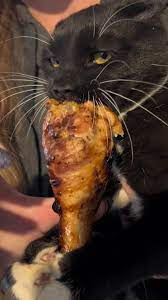

The Ultimate Jim Bro Meal

Description
This guide will teach you to make the Ultimate Jim Meal to buff you and your cat up.
List of ingredients
- Chicken Breast Boneless Skinless:Approximately 200g
- Rice:Approximately 1 cup(158g)
- Brocoli:Choice of amount.(More veggies wont hurt)
Steps to make Ultimate Jim Bro Meal
- Cook rice in a rice cooker the asian way.
- Boil a pot of water.
- Place chicken breast into the boiled water and cook for 10 minutes with stove heat off.
- Place brocoli into the same pot of chicken breast when the chicken breast have been cooke for around 7 minutes.
- Take out both brocoli and chicken breast when 10 minutes have been reached and serve with cooked rice.
- Finish the meal you gotta fuel up for DEM GAINZ.